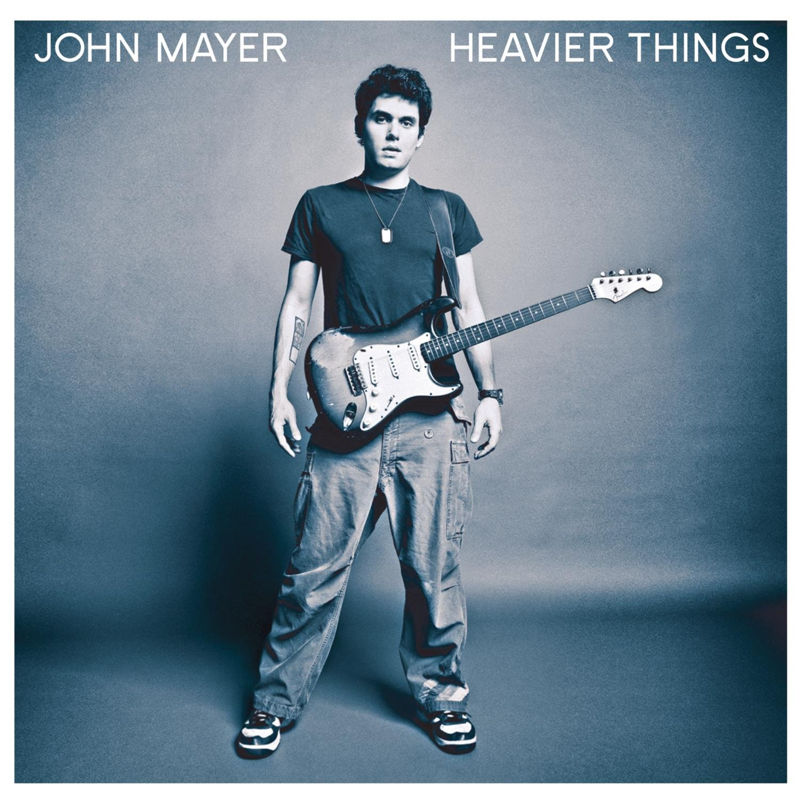

Favorite Albums
Click on any album to explore
Songs About Jane

Heavier Things
Room for Squares
×
Why These Albums Matter
These albums matter because I love the period of the early 2000s and they are timeless when it comes to all areas of my life—from studying to building to handling breakups. The raw emotion in Maroon 5's debut, the introspection of Mayer's songwriting, and the honesty in their lyrics have been the soundtrack to my most important moments. They represent a golden era of music that continues to inspire my work in computer science, providing the perfect backdrop for late-night coding sessions, debugging marathons, and creative breakthroughs.